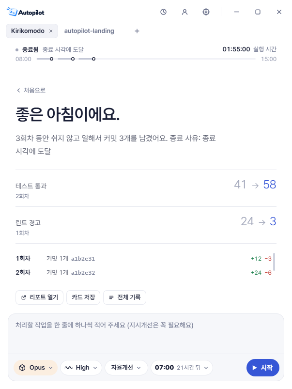
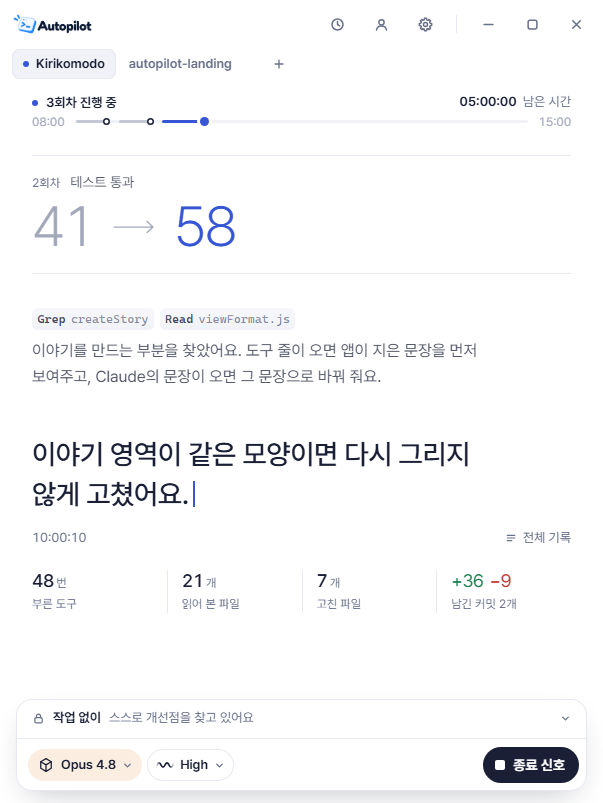
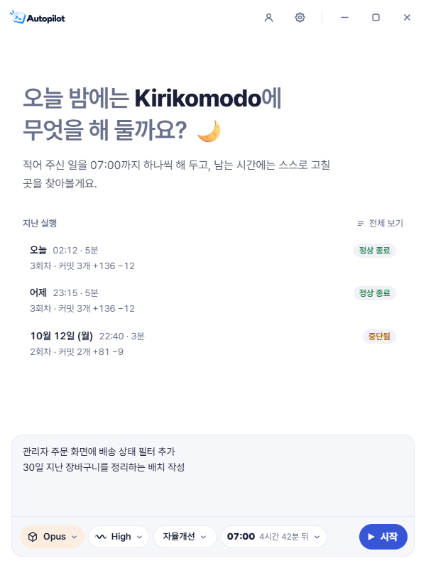
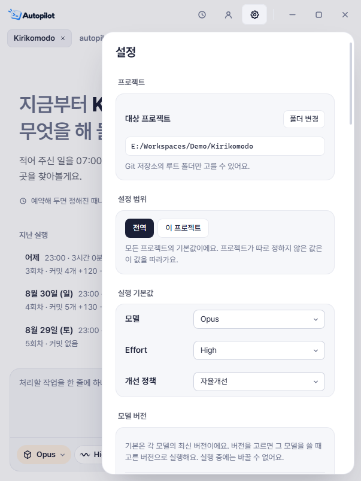
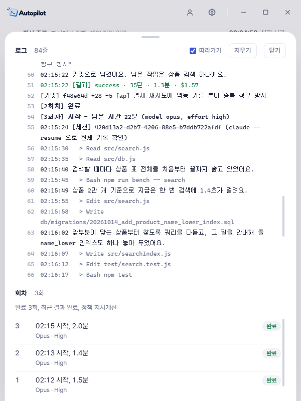

끝낼 시각까지만 일해요
정한 작업만 처리하거나, 끝난 뒤에도 개선할 곳을 찾게 해요. 사용량 한도에 걸리면 기다렸다 이어가요.
할 일과 종료 시각만 정하세요. Claude Code가 고치고 검증하고, 돌아왔을 때 볼 커밋을 남겨요.


AutoPilot은 작업 선택, 코드 수정, 검증, 커밋, 기록, 다음 작업을 반복해요.
Git 프로젝트 폴더를 열고 할 일을 적어요. 모델, 작업 방식, 종료 시각도 같은 자리에서 골라요.

Claude Code가 수정하고 테스트를 돌려요. 지금 무엇을 하는지 짧은 문장으로 들려줘요.
회차마다 커밋이 남고 리포트가 쌓여요. 바뀐 점을 살펴보고 반영할지 직접 정해요.
검증으로 확인한 변화만 성과로 적어요. 위 수치는 예시 프로젝트의 실행 결과예요.
정한 작업만 처리하거나, 끝난 뒤에도 개선할 곳을 찾게 해요. 사용량 한도에 걸리면 기다렸다 이어가요.
내 작업 브랜치는 건드리지 않고, 검증을 통과한 변경만 커밋해요.
ai/autopilot
[ap] 결제 재시도 시 멱등 키를 붙여 중복 청구 방지
클라우드에 올리지 않고 내 폴더에서 바로 실행해요.

읽은 파일, 고친 파일, 돌린 명령이 회차별로 남아요. 나중에 이유를 되짚어 볼 수 있어요.

Windows 64비트 PC, Git, Claude Code 사용 권한이 필요해요. 프로젝트에는 커밋이 하나 이상 있어야 해요.
네. 클라우드에서 도는 서비스가 아니라 내 PC에서 실행돼요. 앱 창을 닫아도 시스템 트레이에서 계속 동작해요.
아니요. ai/autopilot 브랜치에 커밋으로 남고, 직접 검토한 뒤에 병합해요.
Claude Code 명령을 매번 승인받지 않고 실행해요. 중요한 데이터는 백업하고, 신뢰하는 프로젝트에서 써 주세요. 삭제할 파일은 .autopilot/recycle_bin으로 옮겨 두어서 되돌릴 수 있어요.
지금은 Windows 64비트만 지원해요.